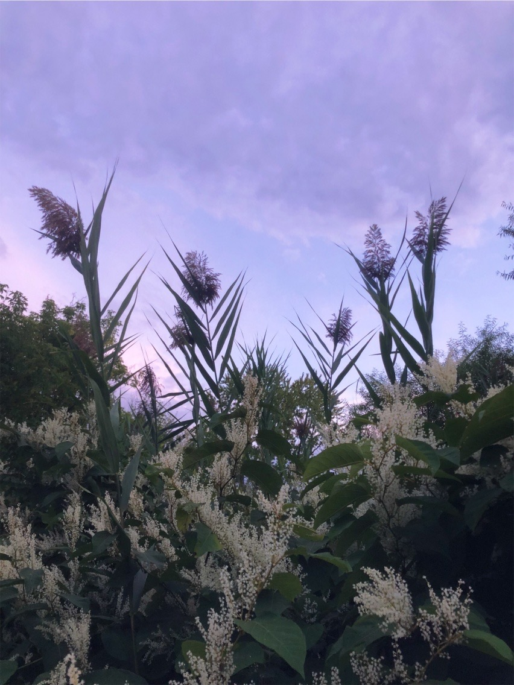
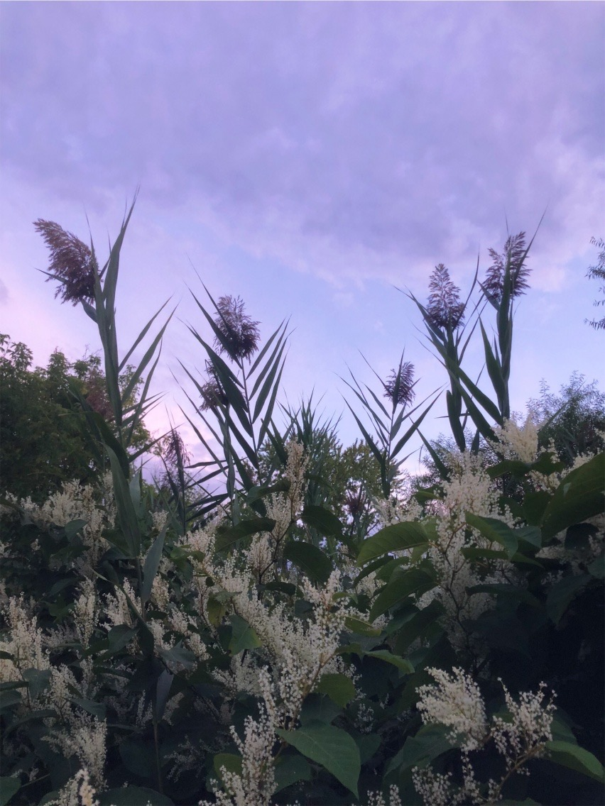

Welcome to the Club...
I visited St. Louis lately, and on my way West, after changing cars at Terre Haute, Indiana, a mild, benevolent-looking gentleman of about fortyfive, or maybe fifty, came in at one of the way-stations and sat down beside me. We talked together pleasantly on various subjects for an hour, perhaps, and I found him exceedingly intelligent and entertaining. When he learned that I was from Washington, he immediately began to ask questions about various public men, and about Congressional affairs; and I saw very shortly that I was conversing with a man who was perfectly familiar with the ins and outs of political life at the Capital, even to the ways and manners, and customs of procedure of Senators and Representatives in the Chambers of the national Legislature. Presently two men halted near us for a single moment, and one said to the other: “Harris, if you'll do that for me, I'll never forget you, my boy.” My new comrade's eye lighted pleasantly. The words had touched upon a happy memory, I thought. Then his face settled into thoughtfulness— almost into gloom. He turned to me and said, “Let me tell you a story; let me give you a secret chapter of my life—a chapter that has never been referred to by me since its events transpired. Listen patiently, and promise that you will not interrupt me.” I said I would not, and he related the following strange adventure, speaking sometimes with animation, sometimes with melancholy, but always with feeling and earnestness. • •